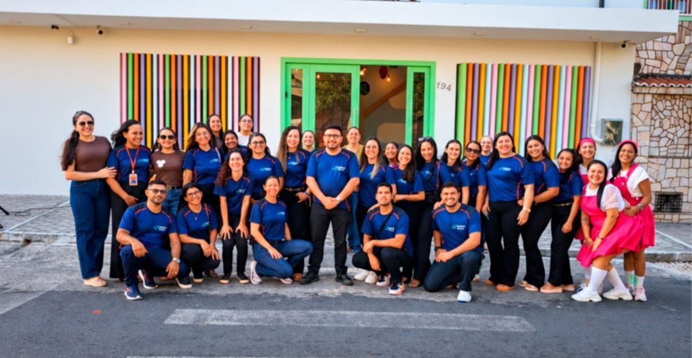

Sistema de ensino COC
Conhecimento e recursos pedagógicos em cada etapa da aprendizagem.
O mundo se descobre junto.
Nossa escola
O Colégio Future atende a Educação Infantil e o Ensino Fundamental no Centro de Camocim, Ceará.
A proposta reúne o sistema de ensino COC e a Escola da Inteligência, aproximando a aprendizagem dos conteúdos e o desenvolvimento socioemocional.
Projetos de ciência, cultura, esporte e literatura ampliam as experiências dos estudantes e abrem espaço para a curiosidade.
Venha conhecer de perto
Quem faz o Future
Professores, coordenação e colaboradores que acompanham cada estudante de perto, todos os dias.
Nosso jeito de aprender
Conhecimento e recursos pedagógicos em cada etapa da aprendizagem.
Emoções, convivência e desenvolvimento socioemocional.
Conversas e descobertas sobre escolhas no dia a dia.
Desafios que despertam a investigação e a curiosidade.
Criatividade e expressão para descobrir novos talentos.
Atividades que aproximam, movimentam e ensinam a cooperar.
Agende uma visita para conhecer os espaços da escola, conversar sobre a proposta pedagógica e tirar suas dúvidas com a equipe.
Agendar uma visitaMatrículas 2027
Vamos conversar sobre o próximo capítulo da sua criança?